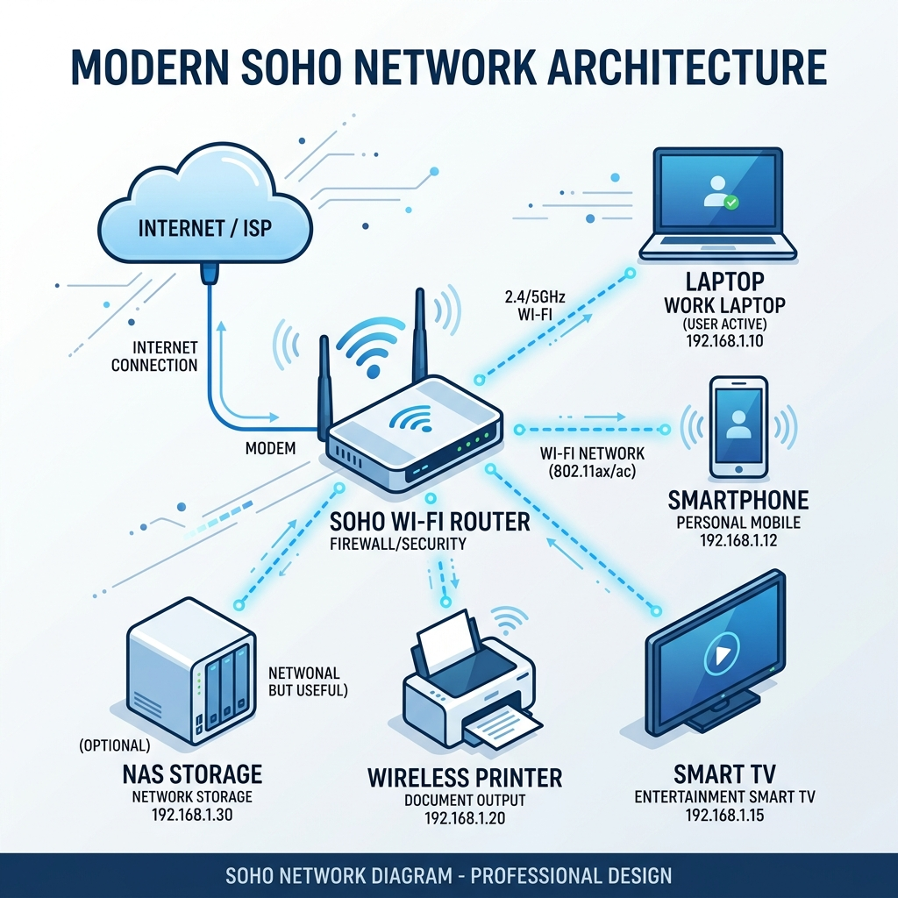
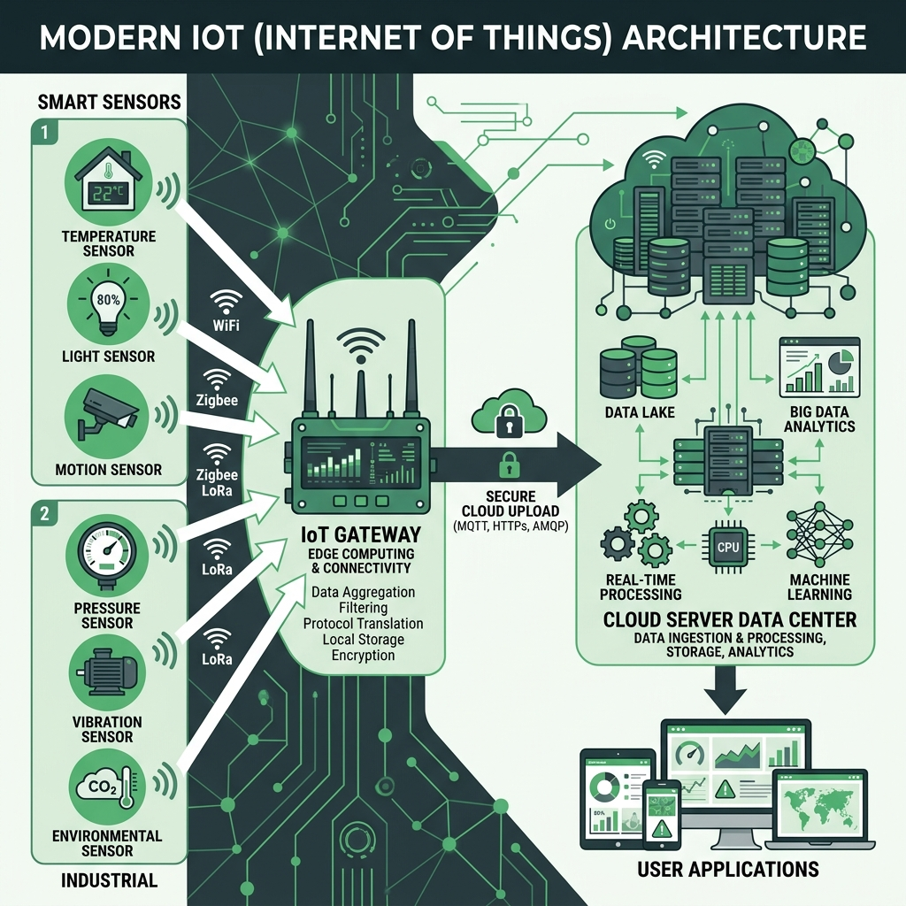
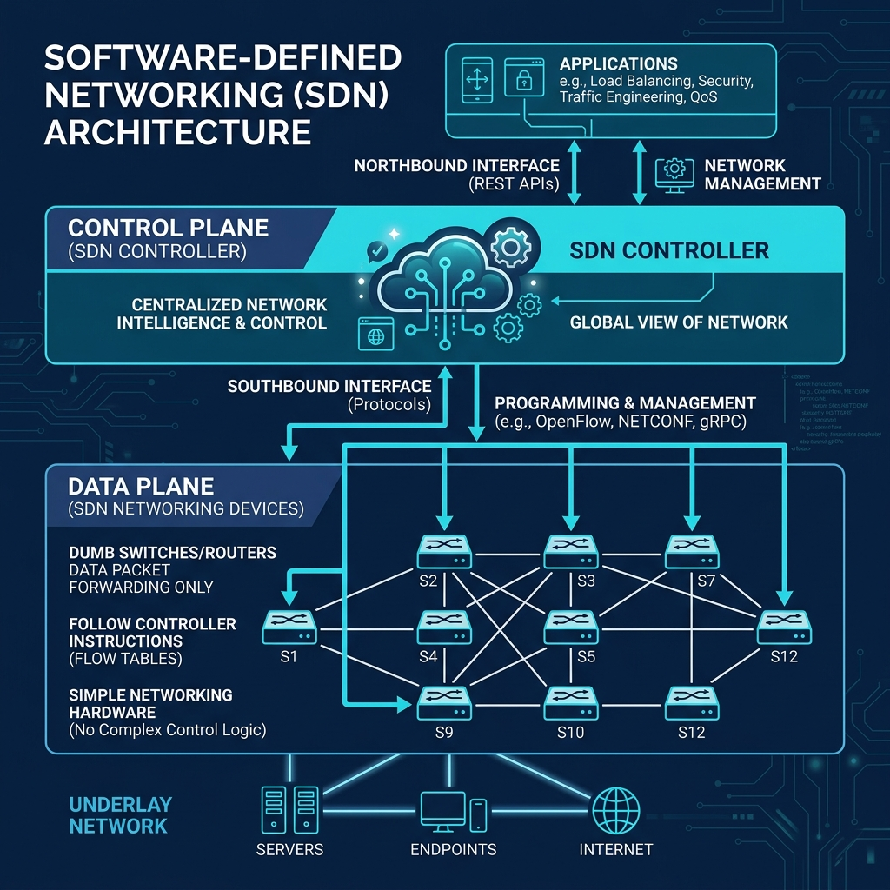

Eksplorasi Mendalam: SOHO, IoT, SDN Dasar, dan Isu Etika Keamanan
Referensi: Paper Studi Kasus Jaringan & RPS Jaringan Komputer
Dosen Pengampu:
SOHO (*Small Office / Home Office*) adalah tulang punggung operasional kerja hibrida modern.

Merujuk pada Paper: "Role of Machine Learning in Optimizing SOHO"
Transisi masif dari komunikasi "Manusia ke Manusia" menjadi komunikasi "Mesin ke Mesin".

Merujuk pada Paper: "Innovative Architectures and Management Strategies"
Masalah Jaringan Tradisional: Router itu "Bodoh". Ia hanya mengikuti insting (Tabel Routing) lokalnya sendiri. Jika butuh mengubah aturan jaringan berskala Nasional, admin harus mencolok kabel *console* ke ratusan router satu per satu!
Solusi SDN: Memisahkan Hardware penyalur fisik, dengan Software (Otak) pengambil keputusannya.

Merujuk pada Paper: "Intelligent Shields: Artificial Intelligence and Machine Learning for Cybersecurity"
Lanskap keamanan jaringan berubah drastis dengan hadirnya AI:
Tanggung jawab moral insinyur jaringan di dunia nyata:
Anda telah merampungkan 15 pertemuan fondasi tulang punggung dunia digital modern!
Semoga Sukses pada Ujian Akhir Semester (UAS)!